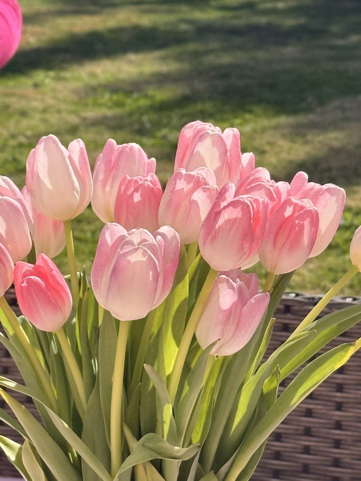
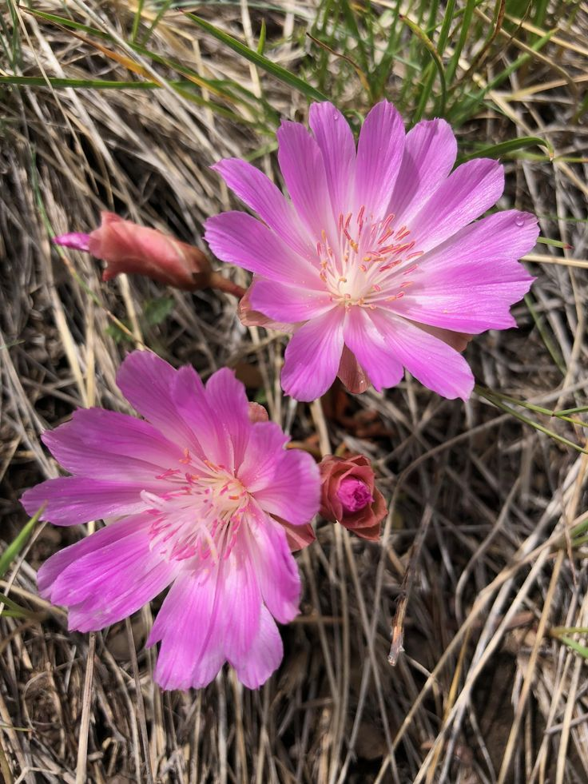
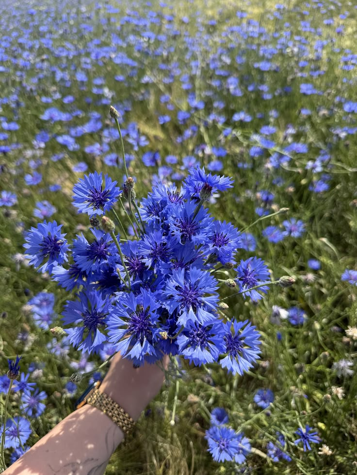

explore the world of flowers

Lotus
Flower Spotlight
The lotus is known for its ability to grow through muddy waters, emerging into something more beautiful. It symbolizes spiritual growth, transformation, and purity.
Read More
Iris
Flower Spotlight
The iris is a beautiful flower known for its unique petals and vibrant colors. It often symbolizes wisdom, hope, and courage.
Read More
Tulip
Flower Spotlight
Tulips are popular spring flowers that come in many different colors. They often symbolize love, happiness, and new beginnings.
Read More
Bitterroot
Flower Spotlight
The bitterroot is Montana's state flower. Its delicate petals and ability to survive in difficult environments make it especially unique.
Read More
Dahlia
Flower Spotlight
Dahlias are known for their detailed petals and wide variety of colors. They often symbolize creativity, elegance, and inner strength.
Read More
Cornflower
Flower Spotlight
Cornflowers are recognizable for their bright blue petals. They are often associated with hope, friendship, and natural beauty.
Read More
The Lotus
A symbol of growth and transformation, the lotus reminds us that beauty can emerge from difficult circumstances.
The Iris
With its colorful petals and elegant appearance, the iris represents hope, wisdom, and inspiration.